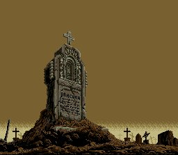
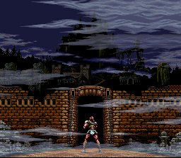
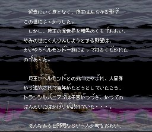
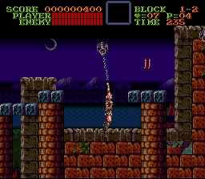
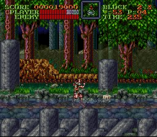
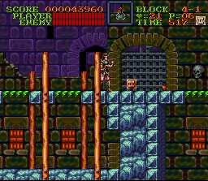

|
Super Castlevania
4
เกม Super Castlevania 4
++ Game :: Super Castlevania 4
++ เครื่องเล่น :: SuperFamicom
++ โดย :: Pratya
++ E-mail :: Pratya_Pi@hotmail.com
++ http://home.nakhon.net/pipe
- - - - - - - - - - - - - - - - - - -
Title




Charactor

ตัวละครหลักคือ Simon Belmont
ผู้เป็นหลายชายของ Christopher
Story
ทุกๆ 100 ปี พลังของ Dracula จะเข้มแข็งขึ้น
ทำให้ Dracula ฟื้นคืนชีพขึ้นมาอีกครั้ง
(หลังจากที่ถูก Christopher ปราบไปเมื่อปี 1591)
และการต่อสู้ระหว่างตระกูล Belmont และ Dracula ก็เริ่มต้นขึ้นอีกครั้ง
Whip
ภาคนี้สามารถฟาดแส้ไปได้หลายทิศทาง ไม่ว่าจะเป็นบน ล่าง หรือเฉียงๆ
อีกทั้งยังขยับแส้ที่ฟาดไปแล้วได้ด้วย

รวมทั้งใช้แส้เกี่ยวกับตะขอ เพื่อเหวี่ยงตัวไปอีกฝั่งหนึ่งได้ด้วย

Sub-Weapon


ภาคนี้สามารถใช้ Sub-Weapon ได้ครั้งละหลายอัน ซึ่งเมื่อเก็บ
Item ดังรูป ก็จะสามารถใช้ได้
ซึ่งสามารถใช้ได้สูงสุดถึงครั้งละ 3 อันเลยทีเดียว
แต่เมื่อเก็บ Item เพิ่มความสามารถแล้ว จะไม่สามารถเปลี่ยนชนิดของ
Sub-Weapon ได้
ดังนั้นควรคิดให้ดีว่าจะใช้ Sub-Weapon อะไร
เพราะถ้าเปลี่ยนชนิดของ Sub-Weapon จะทำให้ใช้ได้เพียงครั้งละ 1 อันเหมือนเดิม
ต้องเก็บอย่างต่อเนื่องจึงจะเพิ่มได้ถึง 3 อัน
Next
to Stage & Boss
|